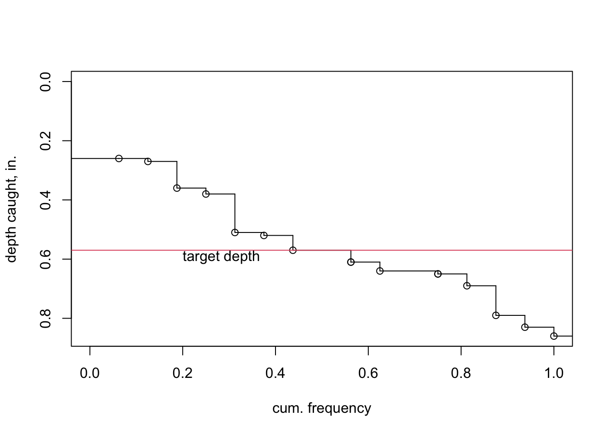

The spreval package contains a number of functions to assess irrigation sprinkler system application uniformity and efficiency. Use of the functions allow for assessment of lateral-move, solid-set, and hose pull (big gun) irrigation systems.
spreval::catchcan is a data file included in this package. Methods implemented in this package and data used in the vignettes are taken from the references below:
Christiansen, J.D. 1942. Irrigation by Sprinkling. California Agricultural Experiment Station Bulletin 670. (https://archive.org/details/irrigationbyspri670chri/page/n3/mode/2up)
Evans, R.O., Barker J.C., Smith J.T., Sheffield R.E. 1997b. Field calibration procedures for animal wastewater application equipment, hard hose and cable tow traveler irrigation system. NC Cooperative Extension Service publication AG-553-2. Raleigh, NC. (https://content.ces.ncsu.edu/hard-hose-and-cable-tow-traveler-irrigation-systems)
Evans, R.O., Barker J.C., Smith J.T., Sheffield R.E. 1997a. Field calibration procedures for animal wastewater application equipment, stationary sprinkler irrigation system. NC Cooperative Extension Service publication AG 553-1. Raleigh, NC. (https://irrigation.wordpress.ncsu.edu/files/2017/01/ag-553-1-stationary-sprinkler.pdf)
Mirriam and Keller, 1978. Farm System Irrigation Evaluation: A Guide for Management. Form II-1, item 10, p.29. Utah State University, Logan, Utah. (https://pdf.usaid.gov/pdf_docs/PNAAG745.pdf)
You can install the released version of spreval (date TBD) from CRAN with:
install.packages("spreval")a “pre-CRAN” development package is available at: package in github This may be installed as an archive file locally on your machine after downloading.
A pdf file documenting all of the package functions is available at: here
Check the changelog tab for updates on version history.
A quick example of a couple of things this package will do is shown below. In this example, conventional statistics, e.g., CU, DU, DU low half (DU.lh), and PELQ are computed. Additionally, a cumulative distribution plot of the data are shown with a target depth (sfplot) to help visualize the relative area receiving less than or more than the target depth, and the deviation from the target depth is shown. For perspective, the top of the plot can be considered as the soil surface and the cumulative distribution line the depth of catch:
library(spreval)
## basic example code
data("catchcan")
cc.data<-catchcan$solid.set #fetch solid set data
ss.uni<-c(CU(cc.data),DU(cc.data),DU.lh(cc.data),PELQ(cc.data,SI=FALSE,rate=16.98,ss=80,sl=80,dur=2.25))# use U.S. cust. units
table<-round(ss.uni,0)
knitr::kable(t(table),col.names=c("CU","DU","DU.lh","PELQ"))#transpose array (table) for display| CU | DU | DU.lh | PELQ |
|---|---|---|---|
| 75 | 55 | 76 | 55 |
